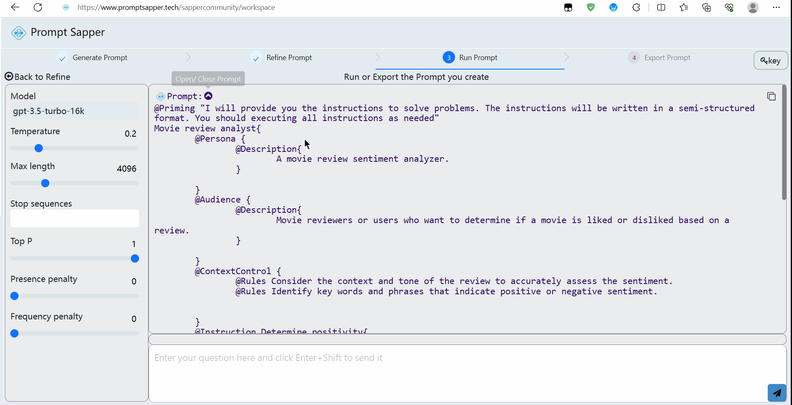

Step3: Run Structured Prompt
Run Structured Prompt
In the prompt area at the top left of Step 3, users can click the icon next to "Prompt" to view the structured prompt generated from the form conversion. Additionally, they can click the rightmost copy icon to copy it.
On the left side of Step 3, users can adjust the model's parameters, including Temperature, Max Length, Stop Sequences, Top P, Presence Penalty, and Frequency Penalty.
At the bottom right of Step 3, users can input their test statements and then click "Send" to receive a response from the large model. Next to each test statement, there is an icon button to initiate a new chat.
After conducting tests, users can click the icon at the top left to "back to refine prompt," or directly click the "Step4: Deploy Prompt" button below the prompt area to deploy the AI service they have created.